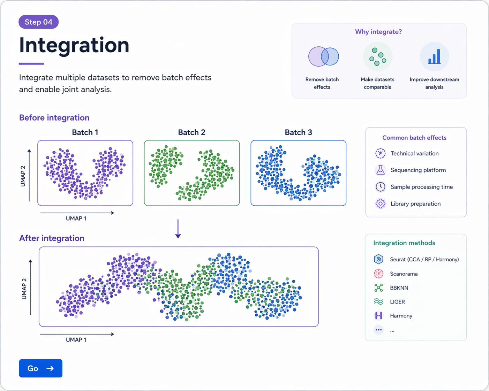

여러 샘플 또는 여러 배치에서 얻은 scRNA-seq 데이터는 batch effect의 영향을 받을 수 있습니다. Integration은 기술적 차이를 줄이고, 공통된 biological signal을 비교하기 위한 단계입니다.
| 상황 | 설명 |
|---|---|
| 여러 환자/샘플 비교 | 서로 다른 샘플을 하나의 객체로 비교하려면 batch effect를 먼저 고려해야 합니다. |
| 실험 날짜가 다름 | 같은 조건이어도 날짜 차이, operator 차이, reagent 차이로 batch effect가 생길 수 있습니다. |
| 기술 플랫폼 차이 | 서로 다른 chemistry 또는 protocol에서 생성된 경우 integration이 더 중요해질 수 있습니다. |
| UMAP에서 샘플별 분리 | cell type보다 sample origin이 더 강하게 보이면 integration 필요성을 의심할 수 있습니다. |
Seurat에서는 각 샘플을 개별적으로 전처리한 뒤, anchor를 찾고 데이터를 통합합니다.
library(Seurat)
# sample list 예시
obj.list <- list(sample1 = obj1, sample2 = obj2, sample3 = obj3)
# 각 샘플에서 normalization 및 variable features
obj.list <- lapply(obj.list, function(x) {
x <- NormalizeData(x)
x <- FindVariableFeatures(x, selection.method = "vst", nfeatures = 2000)
return(x)
})
# integration features 선택
features <- SelectIntegrationFeatures(object.list = obj.list)
# anchor 찾기
anchors <- FindIntegrationAnchors(
object.list = obj.list,
anchor.features = features
)
# 데이터 통합
obj.integrated <- IntegrateData(anchorset = anchors)
통합된 객체에서는 보통 integrated assay를 기준으로 scaling, PCA, UMAP, clustering을 수행합니다.
DefaultAssay(obj.integrated) <- "integrated"
obj.integrated <- ScaleData(obj.integrated, verbose = FALSE)
obj.integrated <- RunPCA(obj.integrated, npcs = 30, verbose = FALSE)
obj.integrated <- RunUMAP(obj.integrated, dims = 1:20)
obj.integrated <- FindNeighbors(obj.integrated, dims = 1:20)
obj.integrated <- FindClusters(obj.integrated, resolution = 0.5)
Harmony는 PCA 공간에서 batch effect를 줄이는 접근입니다. Seurat integration과 함께 자주 비교되는 방법입니다.
library(Seurat)
library(harmony)
obj <- NormalizeData(obj)
obj <- FindVariableFeatures(obj)
obj <- ScaleData(obj)
obj <- RunPCA(obj, npcs = 30)
obj <- RunHarmony(obj, group.by.vars = "sample")
obj <- RunUMAP(obj, reduction = "harmony", dims = 1:20)
obj <- FindNeighbors(obj, reduction = "harmony", dims = 1:20)
obj <- FindClusters(obj, resolution = 0.5)
Integration이 잘 되었는지는 반드시 전후 UMAP을 비교해서 확인해야 합니다.
# integration 전
DimPlot(obj, group.by = "sample")
# integration 후
DimPlot(obj.integrated, group.by = "sample")
DimPlot(obj.integrated, label = TRUE)

Integration은 서로 다른 batch 또는 sample 간 기술적 차이를 줄여, 공통된 cell type 구조를 더 잘 비교할 수 있도록 돕습니다.
library(Seurat)
# 1. 개별 샘플 전처리
obj.list <- list(sample1 = obj1, sample2 = obj2)
obj.list <- lapply(obj.list, function(x) {
x <- NormalizeData(x)
x <- FindVariableFeatures(x, selection.method = "vst", nfeatures = 2000)
return(x)
})
# 2. integration features 선택
features <- SelectIntegrationFeatures(object.list = obj.list)
# 3. anchors 찾기
anchors <- FindIntegrationAnchors(
object.list = obj.list,
anchor.features = features
)
# 4. integrate
obj.integrated <- IntegrateData(anchorset = anchors)
# 5. downstream analysis
DefaultAssay(obj.integrated) <- "integrated"
obj.integrated <- ScaleData(obj.integrated)
obj.integrated <- RunPCA(obj.integrated, npcs = 30)
obj.integrated <- RunUMAP(obj.integrated, dims = 1:20)
obj.integrated <- FindNeighbors(obj.integrated, dims = 1:20)
obj.integrated <- FindClusters(obj.integrated, resolution = 0.5)
# 6. visualization
DimPlot(obj.integrated, group.by = "sample")
DimPlot(obj.integrated, label = TRUE)